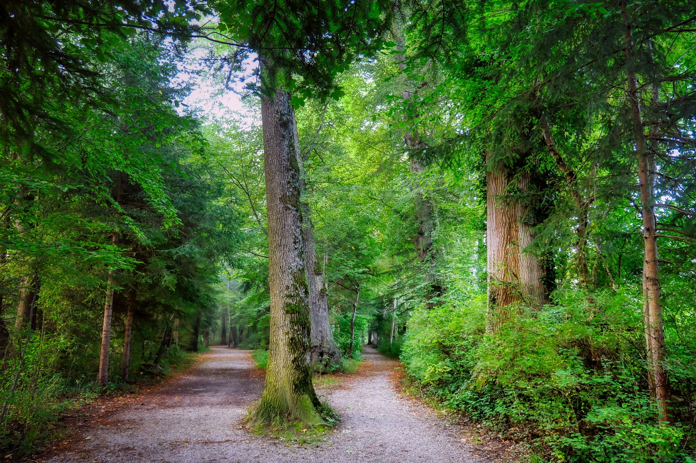

João, um jovem curioso, decide explorar uma floresta próxima à sua casa. Ele caminha por uma trilha tranquila, apreciando a natureza ao seu redor. Após algum tempo, ele chega a uma bifurcação no caminho. Para qual direção João vai seguir?
João decide seguir pelo caminho escuro e sinuoso. Ele continua andando e, após alguns minutos, avista uma caverna.
João decide seguir pelo caminho iluminado pelo sol. Ele caminha por um tempo e chega à beira de um rio.